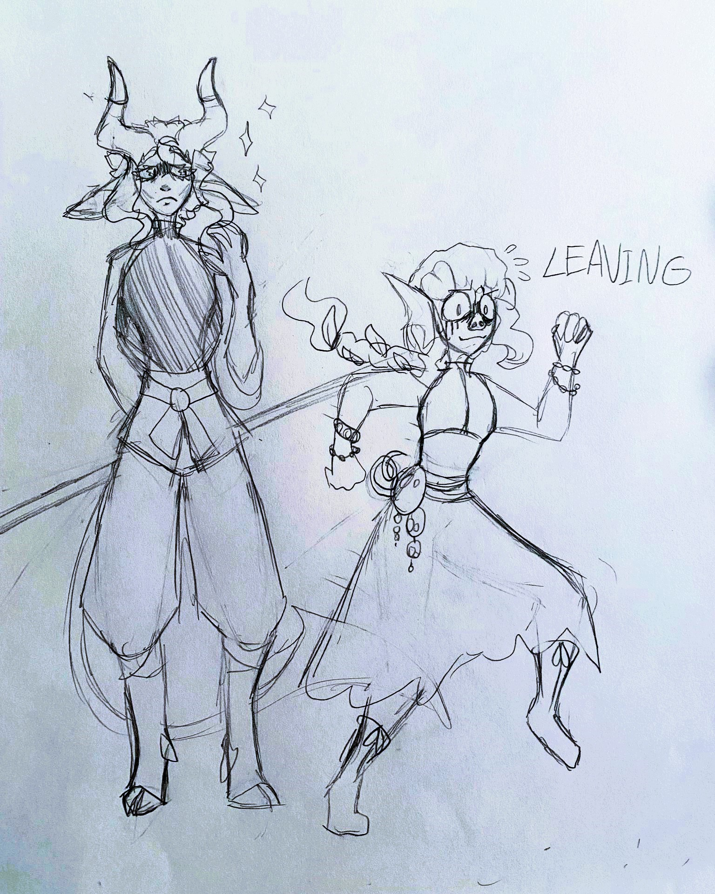
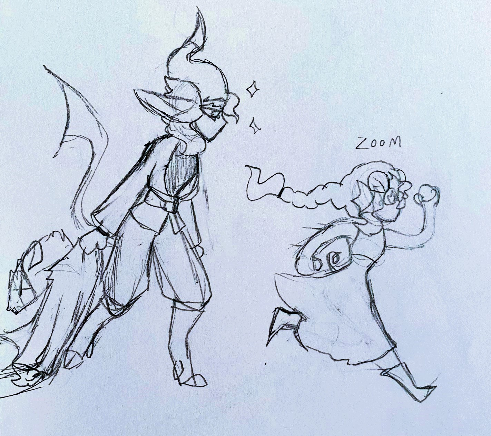

Zanir Mo'Ren - Feral Tiefling - Female - 23 Years Old - Monk
Strength: 14
Dexterity: 11
Constitution: 14
Intelligence: 10
Wisdom: 11
Charisma: 8

It was a calm and cloudy day when the cries of a child drew in a formless beast to the shores of her hometown.
D'arauss the Gravekeeper has never asked for more then a place to store its dead, and in a dangerous symbiosis with those living within its domain, it happily takes whatever bodies fall upon designated grounds to be buried by its many hands... deceased or not. It's often difficult to distinguish between the cries of the living and the mourning of souls, but in cases like this, it was quite easy. The tiefling child had taken an unfortunate tumble, the poor thing having only seen just a few winters, but it was clear to the both of them that she was already dead. This body was far beyond repair. And yet, the soul pleaded, a common response, and her concerns surprised the abomination. It had never encountered the soul of a child, and the purity of her fretting over how worried her parents must be, how she's supposed to be home before sundown, managed to move it. She didn't even ask to be reunited with her body, an impossible feat, just begged for something to make sure her body got home, clearly not understanding the gravity of the situation. If it would allow her soul to rest, it decided, then it would surely make sure the child got home... so long as it received the corpse at the end of the day. Breaking off a branch of itself to pilot the broken body, D'arauss never accounted for the chance of its severed self growing attached to the life of a mortal. Entering a monastery to escape the land of her originator, a stolen name and a stolen life is the legacy of Zanir Mo'ren.

Having tasted of love and freedom, Zanir could not bring herself to go back to her old life, and though this brought fury to the being she was once a part of, there was no doubt in her mind that this was where she wanted to be. Once she expressed her interest in the monastery, the only place she could remember that was truly safe from the influence of D'arauss the Gravekeeper, the parents who had long realized that this was no longer their child were hasty to leave her in the care of the lone monk maintaining the building. He was quick to recognize the unholy origin of the tiefling child, but rather than making the decision her parents couldn't bring themselves to do, he instilled a set of morals in Zanir to counter her lack of natural sense. If it breathes, a burial is unecessary. There is inherent value to all living creatures. Seek learning wherever you can find it. Most importantly, do that which is good, and just. Because of this influence, Zanir is bold in her decisions to make the correct choice, unafraid to contradict an authority's command if she believes herself to be in the right. She is rather naive in this aspect, but she follows the path her mentor has set for her, and is not opposed to learning where her application of these values could be improved. Currently, she seeks to bring peace to the land she has traveled to, far from her origin, in the hopes of setting things right, protecting the innocent, and leaving the graves of the dead undisturbed. Her compassion for the deceased is far stronger than her compassion for the living, it would seem she is not quite mortal yet.
Her last interaction with an adventuring group was within the dungeon of a mansion on a lake, having been imprisoned by the master of the house due to her investigation of a string of disappearances among the common folk. The factor in common had been the extravagant balls hosted by a particularly wealthy noble, and she found that he had been cursing the townspeople using specialized masks to turn them into animal hybrids which would be under his control. The adventuring group investigated this same case weeks later, and their (currently cursed with the traits of a pig) Triton sorcerer, Oslyn, came upon her while investigating the dungeon. Guarded by a man-rat-hybrid, Zanir and Oslyn worked together to disable him... unfortunately, this ended in the man's death. After freeing Zanir, Oslyn moved on to continue her quest to take the noble behind this whole fiasco down, and the tiefling happily followed, dragging the dead body alongside her. In the end, the townspeople were freed, and Zanir was allowed to bury whatever dead bodies were accumulated, before thanking the group and parting ways. Fun Times :)
 